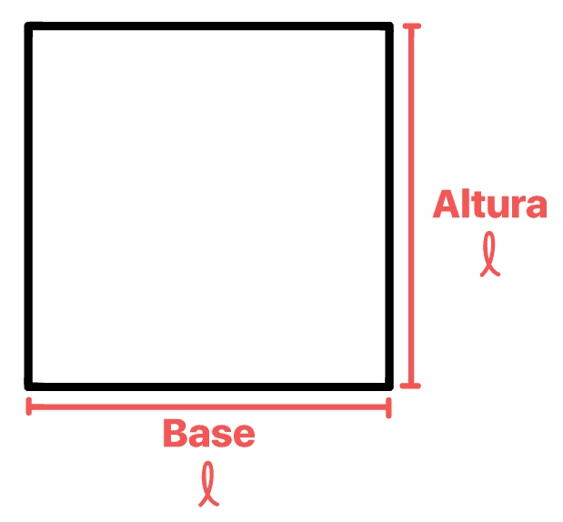

Quadrado
Um quadrado é um polígono com quatro lados de igual comprimento, todos ângulos internos de 90 graus, tornando-o um quadrilátero retângulo. Possui simetria de rotação de 90 graus e diagonais que se cruzam em ângulos retos no centro. Seu perímetro é quatro vezes o comprimento de um lado, enquanto a área pode ser calculada elevando o lado ao quadrado ou usando a fórmula (diagonal^2)/2. É uma figura bidimensional plana e especial, relacionada a retângulos e losangos quando os lados são iguais. O quadrado é uma figura geométrica fundamental com propriedades distintivas.
Seu perímetro é quatro vezes o comprimento de um lado, enquanto a área pode ser calculada elevando o lado ao quadrado ou usando a fórmula (diagonal^2)/2. É uma figura bidimensional plana e especial, relacionada a retângulos e losangos quando os lados são iguais.

Calcule a área do Quadrado
voltar